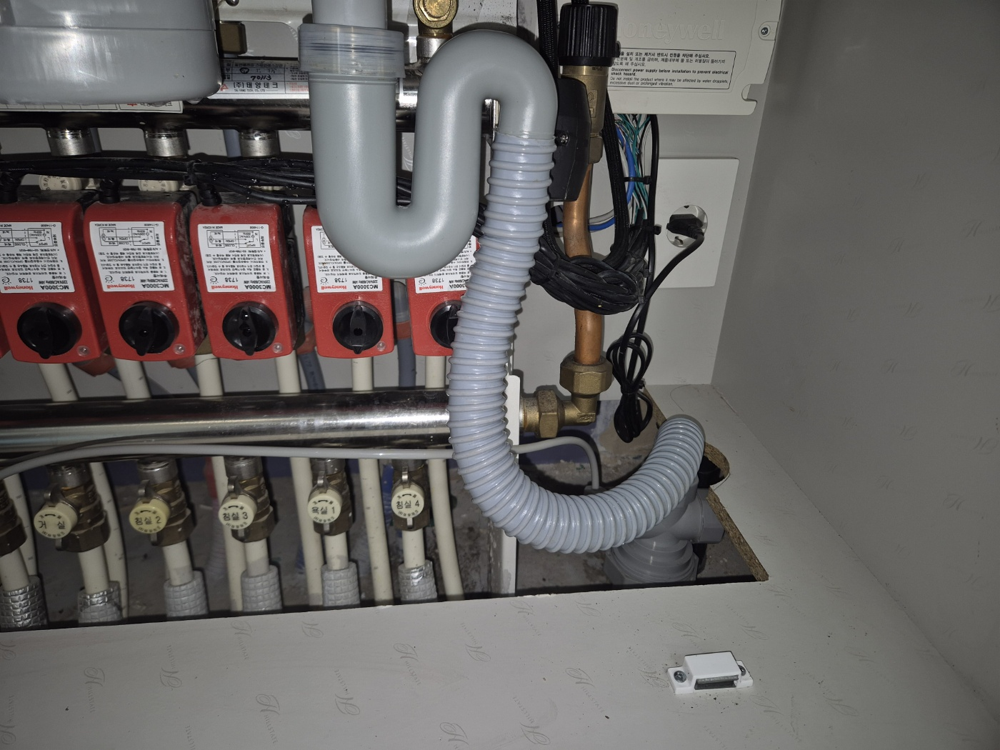
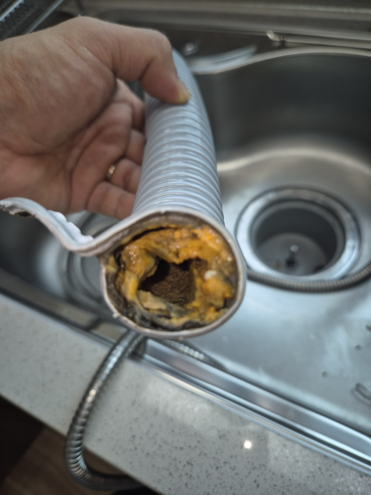
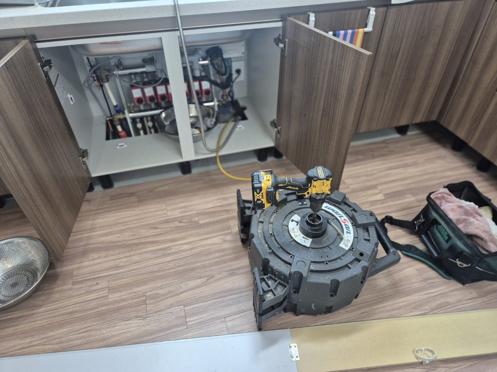
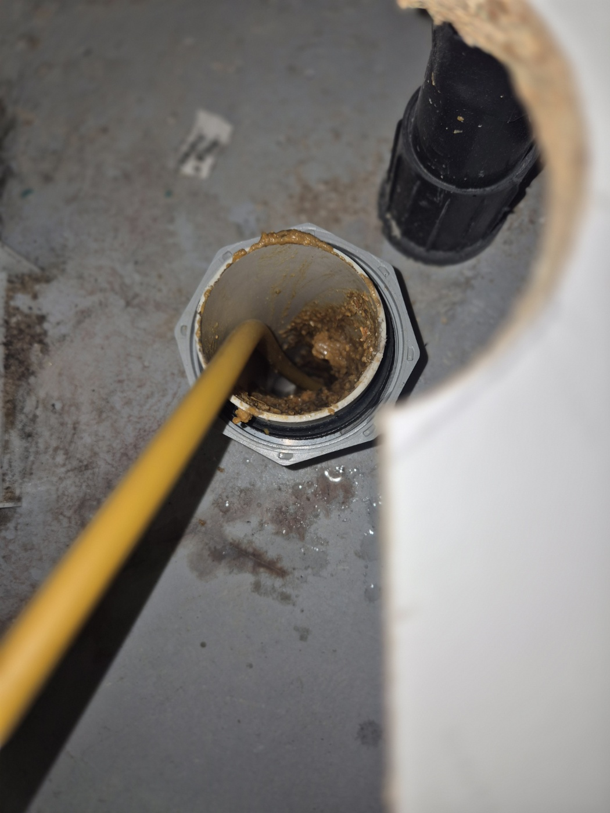
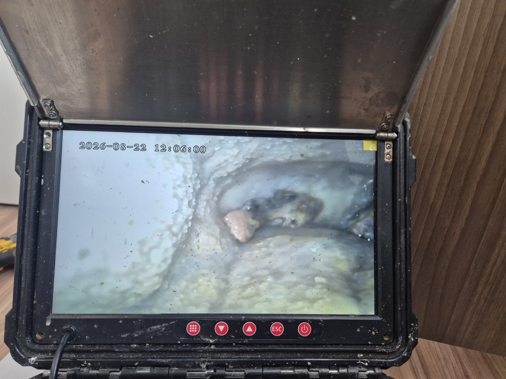
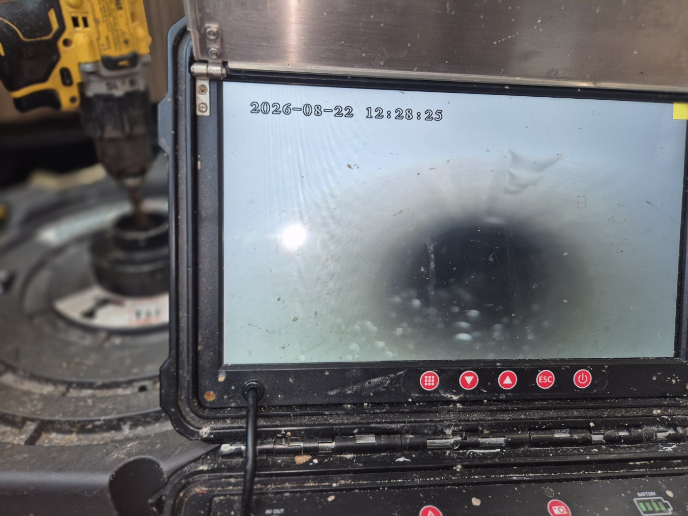

안녕하세요.. 고고고 설비입니다.. 오늘은 천안시 불당동에 있는 아파트에서 싱크대막힘, 하수구막힘 신고를 받고 다녀온 현장입니다. 오래된 아파트라 배관도 세월이 느껴진다고 미리 말씀해주셨어요.
1. 현장 도착과 첫인상
싱크대 배관을 분리해보니 연결 피팅 안쪽에 녹과 찌든때가 두껍게 굳어 있었습니다.. 오래 방치된 상태라 배관 안쪽까지 상태를 확인해봐야 했어요. 피팅을 풀 때도 녹이 슬어서 한 번에 잘 풀리지 않았습니다.
2. 배관 라인 확인
싱크대만 문제인지 확인하려고 다용도실 쪽 배관함도 함께 열어서 다른 라인에는 이상이 없는지 점검했습니다. 좁은 배관함 안쪽까지 랜턴을 비춰가며 하나씩 살펴봤어요.

3. 분리한 배관 상태
싱크대 하부 배관을 완전히 분리해보니, 관 안쪽 전체가 기름때와 녹으로 두껍게 막혀있는 게 눈으로도 확인될 정도였습니다. 오랜 세월 조금씩 쌓인 흔적이 관 벽 전체를 덮고 있었어요.

4. 장비 준비
전동 와이어 장비와 내시경 카메라를 하부장 앞에 준비해두고 본격적인 작업을 시작했습니다. 오래된 배관이라 무리하게 힘을 주지 않고 천천히 진행하기로 했어요.

5. 작업 진행
바닥 청소구를 열어 전동 와이어를 밀어 넣고, 안쪽에 굳어있던 이물질을 반복해서 긁어냈습니다. 케이블이 걸리는 지점마다 속도를 늦추고 조심스럽게 밀어 넣었어요.

6. 내시경으로 확인
중간중간 내시경으로 배관 안쪽 상태를 확인하면서 남은 이물질이 없는지 꼼꼼히 체크했습니다. 처음엔 뿌옇던 화면이 작업을 반복할수록 조금씩 밝아지는 게 보였어요.

7. 마무리 확인
작업을 마치고 다시 한번 내시경으로 배관 안쪽을 확인한 뒤, 물을 내려 정상적으로 배수되는 걸 최종 확인했습니다. 배관을 다시 조립하면서 녹슬었던 피팅도 새것으로 교체해드렸어요.

오래된 배관일수록 기름때와 녹이 겹겹이 쌓이기 쉬운 만큼, 배수 속도가 느려지는 초기 신호가 있을 때 미리 점검받으시는 걸 권해드립니다. 특히 지어진 지 오래된 아파트는 배관 자체 노후화도 함께 살펴보시는 게 좋습니다.
고고고 설비는 주택, 아파트, 원룸, 상가, 공장의 생활 하수 오수 배관을 관리해 주는 업체입니다. 고고고 설비에 전화 주시면 친절상담 정확한 진단 확실한 해결로 보답해 드리겠습니다!!